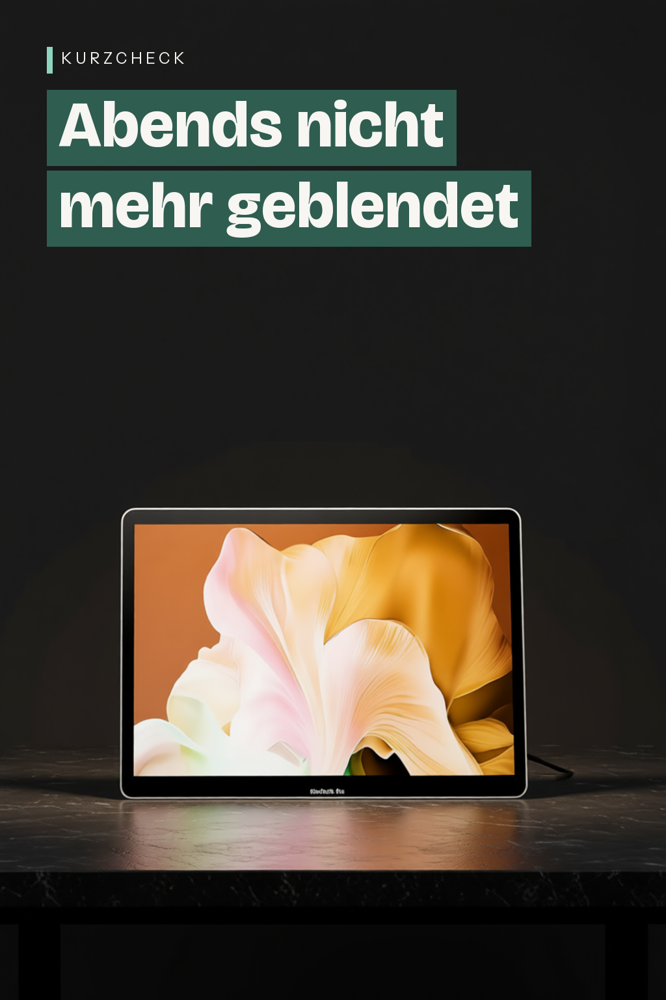

Doppelkopf Schreibtischlampe LED Dimmbar
CHARYJOD
Doppelkopf Schreibtischlampe LED Dimmbar, Dehnbare LED Schreibtischlampe,Schreibtisch Lampe hat 5-Farbtemperaturen und 10-Helligkeitsstufen, USB-Ladeanschluss

Angaben des Herstellers
- Skalierbare Schreibtischlampe: Diese schreibtischlampe kann sich bis zu 58CM erstrecken und kann frei auf die Höhe verlängert werden, die Sie benötigen; Durch die Annahme eines Doppelkopfdesigns kann es 180° geöffnet werden, um den Arbeitsbereich zu beleuchten, wodurch es sehr gut für den Einsatz auf großen Arbeitscomputern geeignet ist.
- Augenschutz Schreibtischlampe: Diese schreibtischlampe dimmbar ist Touch einstellbar und hat 5-Farbtemperaturen. Tagsüber können Sie 6500K weißes Licht einschalten, und nachts können Sie 4000K Lesemodus einschalten. Sie können die fünf Farbtemperaturen einstellen; Sie können auch 10-Helligkeitsstufen über Touch-Tasten anpassen und sich frei an Farbtemperatur und Helligkeit anpassen, die Ihre Augen angenehm machen.
- 45 minutes auto-off：Die CHARYJOD schreibtischlampe verfügt über eine 45-minütige automatische Abschaltfunktion, so dass Sie sich keine Sorgen mehr machen müssen, dass das Licht bei Nacht eingeschaltet bleibt.
- Mehrzweck: Diese schreibtischlampe verfügt über einen USB-Ladeanschluss, mit dem Sie Ihr Telefon aufladen können, während Sie die Lampe für die Beleuchtung verwenden. Bitte achten Sie darauf, dass Sie Ihr Telefon nicht verwenden, während Sie es aufladen!
- Platzersparnis: Die faltbare Leistung ermöglicht es der Schreibtischlampe, nur wenig Platz einzunehmen und sich frei zu bewegen; Die stabile Basis gibt Ihnen das größte Gefühl der Sicherheit, ohne sich Gedanken über Kippen oder Instabilität machen zu müssen.
Werbung. Diese Seite enthält Partnerlinks: Als Amazon-Partner verdiene ich an qualifizierten Käufen. Für dich ändert sich nichts am Preis. Preise und Verfügbarkeit stehen bei Amazon und ändern sich laufend.